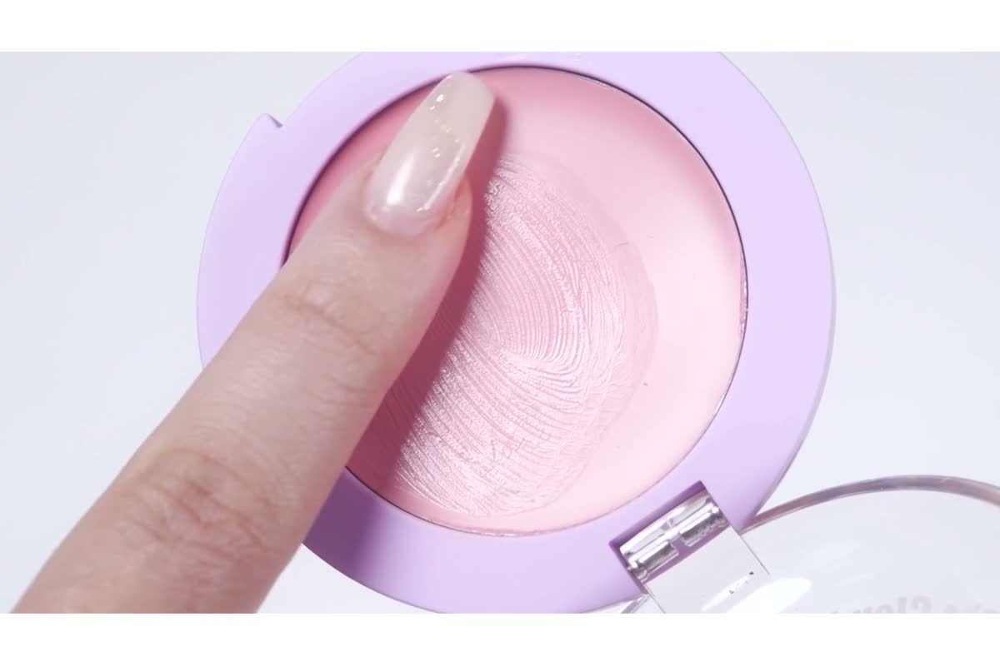
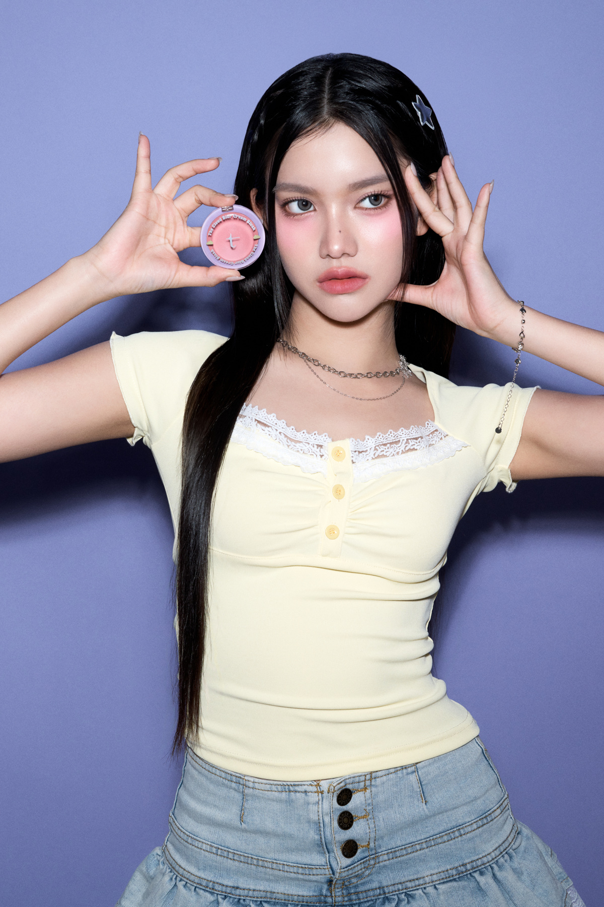

모아는 원본 2:3 비율
기존의 3:2 가로 크롭은 제외했습니다. 다른 모델 컷은 제품과 사용 장면이 달라 단순 대체하지 않았습니다. 현재 블러셔를 든 사진을 온전히 보여주고, PC에서는 폭을 제한해 길이를 조절합니다.
2026.10.16 · V5 검토안 · 사용자 승인 전
“정리하자”는 재기획·재제작 요청으로 바로잡았습니다. V4에서 지적한 사진 크롭, 의미 없는 띠, 텍스트가 이어지는 하단, 추상적인 마무리 문구를 기준으로 페이지를 다시 구성했습니다.
수정 상세페이지 보기 ↗
열린 용기의 내용물과 닫힌 용기의 인쇄를 함께 보여줍니다.

밝기를 조정한 실제 영상에 사용법을 바로 붙입니다.

얼굴·손·제품을 보존합니다. 확인되지 않은 색상명은 붙이지 않습니다.

실제 볼 발색과 제형을 나란히 보고 고르는 것으로 마칩니다.
기존의 3:2 가로 크롭은 제외했습니다. 다른 모델 컷은 제품과 사용 장면이 달라 단순 대체하지 않았습니다. 현재 블러셔를 든 사진을 온전히 보여주고, PC에서는 폭을 제한해 길이를 조절합니다.
리본·구름·과일 소품은 쓰지 않았습니다. 새 연출의 역할은 용기와 내용물을 선명하게 보여주는 것입니다. 크림투파우더 설명은 뒤의 실제 사용 영상이 맡습니다.
아래에 텍스트 단계만 반복하던 블록을 없앴습니다. “소량 → 얇게 펴 바르기 → 두드리기”를 영상 바로 아래 한 문장으로 연결했습니다. 성분은 용량과 함께 짧게 정리했습니다.
“오늘의 생기를 골라보세요”와 별도 엔딩 블록을 없앴습니다. 여섯 색의 실제 발색·제형·색 설명 다음에 제품 정보가 이어집니다.
부드럽게 펴 바르고,
보송하게 마무리.
제형: 크림의 발림성, 파우더리한 마무리.
사용법: 손끝에 소량을 묻혀 얇게 펴 바른 뒤, 가볍게 두드려 주세요.
컬러: 여섯 가지 컬러, 볼 위에서 비교하세요.
크림투파우더는 사용자 제품 설명, 사용법·색상명·오일 함유는 공식 제품 자료에 근거합니다. 모공 삭제·지속 시간·베이스 밀림 없음 등 입증되지 않은 효능은 넣지 않았습니다.
기존 조사에서 펴 바르는 모습과 마무리 피부를 함께 보여주는 구성을 확인했습니다. TAM에서는 실제 사용 영상과 완성 메이크업 사진을 연결했습니다.
상품 원문 ↗기존 조사에서 컬러마다 제형과 볼 발색을 붙인 구성을 확인했습니다. TAM의 여섯 색도 이름이 확인된 원본 사진을 두 열로 유지했습니다.
상품 원문 ↗2026-10-16 10:02 KST 판매순 화면에서 각각 6번째·8번째로 관찰됐습니다. 판매량·집계 기간은 공개되지 않았으며, 이 구성이 매출의 원인이라는 의미는 아닙니다. 순위를 새로 측정한 기록도 아닙니다. 당시 조사 기록 · 판매순 화면